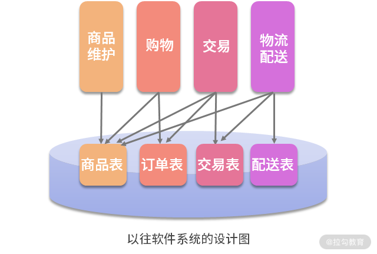

- 00 开篇词 让我们把 DDD 的思想真正落地.md.html
- 01 DDD ：杜绝软件退化的利器.md.html
- 02 以电商支付功能为例演练 DDD.md.html
- 03 DDD 是如何落地到数据库设计的？.md.html
- 04 领域模型是如何指导程序设计的？.md.html
- 05 聚合、仓库与工厂：傻傻分不清楚.md.html
- 06 限界上下文：冲破微服务设计困局的利器.md.html
- 07 在线订餐场景中是如何开事件风暴会议的？.md.html
- 08 DDD 是如何解决微服务拆分难题的？.md.html
- 09 DDD 是如何落地微服务设计实现的？.md.html
- 10 微服务落地的技术实践.md.html
- 11 解决技术改造困局的钥匙：整洁架构.md.html
- 12 如何设计支持快速交付的技术中台战略？.md.html
- 13 如何实现支持快速交付的技术中台设计？.md.html
- 14 如何设计支持 DDD 的技术中台？.md.html
- 15 如何设计支持微服务的技术中台？.md.html
- 16 基于 DDD 的代码设计演示（含 DDD 的技术中台设计）.md.html
- 17 基于 DDD 的微服务设计演示（含支持微服务的 DDD 技术中台设计）.md.html
- 18 基于事件溯源的设计开发.md.html
- 捐赠
10 微服务落地的技术实践
如今，做一个优秀的程序员越来越难。激烈的市场竞争、互联网快速的迭代、软件系统规模化发展，无疑都大大增加了软件设计的难度。因此，对于架构师的能力要求也越来越高，就像我的一本书里写道的：
作为顶级架构师应当具备这样两个核心能力： （1）能够将业务转换为技术； （2）能合理利用技术支撑业务。
“不想当将军的士兵不是好士兵”，因此作为普通开发人员的你，也应当树立成为顶级架构师的目标，并不断努力。
能够将业务转换为技术，意味着需要将更多的精力放到对业务的理解中。技术本身并不能产生价值，你必须具备超强的业务落地能力，能够将用户的业务需求落地到技术方案，开发出用户乐于使用的产品和功能，用户才能为之买单，企业才能挣钱。具备这样的能力，才能够强力地帮助企业产生效益，才能体现你的价值。学习 DDD 就能让你掌握快速学习业务领域知识的能力。
能合理利用技术支撑业务，意味着你必须具备广博的知识与开阔的视野，能将用户的业务痛点，快速落地形成合理的，甚至是最优的技术方案。做出用户需要的功能，让用户为之买单，从而为企业产生效益。然而，如今是一个技术快速更迭的时代，各种高新技术层出不穷。每次新产品的开发不是将原有的技术拿来炒冷饭，而是运用更多的新技术解决新问题，让产品更有竞争力与生命力。因此，你必须有广博的技术知识与超强的技术落地能力。
上一讲谈到 DDD 落地微服务的分析设计过程，然后将这些设计最终落实到每个微服务的设计开发中。微服务的落地其实并没有那么简单，需要解决诸多设计与实现的技术难题，这一讲我们就来探讨一下吧。
如何发挥微服务的优势
微服务也不是银弹，它有很多的“坑”。开篇词中提到，当我们将一个庞大的业务系统拆分为一个个简单的微服务时，就是希望通过合理的微服务设计，尽量让每次的需求变更都交给某个小团队独立完成，让需求变更落到某个微服务上进行变更。唯有这样，每次变更只需独立地修改这个微服务，独立打包、独立升级，新需求就实现啦，才能发挥微服务的优势。

然而，过去很多系统都是这样设计的（如上图所示），多个模块都需要读取商品信息表，因此都通过 JDBC 直接读取。现在要转型微服务了，起初采用数据共享的微服务设计，就是数据库不变，然后简单粗暴地直接按照功能模块进行微服务拆分。这时，多个微服务都需要读取商品信息表，都通过 SQL 直接访问。这样的设计，一旦商品信息表发生变更，那么多个微服务都需要变更。这样的设计就使得微服务的变更与发布变得复杂，微服务的优势无法发挥。

通过前面 DDD 的指导，是希望做“小而专”的微服务设计。按照这样的思路设计微服务，对商品信息表的读写只有“商品维护”微服务。当其他微服务需要读写商品信息时，就不能直接读取商品信息表，而是通过 API 接口去调用“商品维护”微服务。这样，日后因商品信息变更而修改的代码就只限于“商品维护”微服务。只要“商品维护”微服务对外的 API 接口不变，这个变更则与其他微服务无关。只有这样的设计，才能真正发挥微服务的优势。
为了规范“小而专”的微服务设计，在微服务转型之初，先按照 DDD 对数据库表按照用户权限进行划分。每个微服务只能通过自己的账号访问自己的表。当需要访问其他的表时，只能通过接口访问相应的微服务。这样的划分，就为日后真正的数据库拆分做好了准备，微服务转型将更加平稳。
怎样提供微服务接口
因此，微服务的设计彼此之间不是孤立的，它们需要相互调用接口实现高内聚。然而，当一个微服务团队向另一个微服务团队提出接口调用需求时，另一个微服务团队该如何设计呢？
首先第一个问题，当多个团队都在向你提出 API 接口时，你怎么提供接口。如果每个团队给你提需求，你就必须要做一个新接口，那么你的微服务将变得非常不稳定。因此，当多个团队向你提需求时，必须要对这些接口进行规划，通过复用用尽可能少的接口满足他们的需求；当有新的接口提出时，要尽量通过现有接口解决问题。这样做，你就能用更低的维护成本，更好地维护自己的微服务。
接着，当调用方需要接口变更时怎么办？变更现有接口应当尽可能向前兼容，即接口的名称与参数都不变，只是在内部增加新的功能。这样做是为了不影响其他微服务的调用。如果确实需要更改现有的接口怎么办？宁愿增加一个新的接口也最好不要去变更原有的接口。

此外，调用双方传递的值对象需要完全一致吗？当然不用。当被调方因为某些变更对值对象增加了字段，而这些字段调用方不使用时，那么调用方不需要跟着变更值对象。因为微服务间的调用是采用RESTful 接口，以 Json 的形成传递数据，是一种松耦合的调用。因此调用双方的值对象可以不一致，从而降低了需求变更的微服务更新范围。
最后，调用方如何调用接口呢？这里分为同步调用与异步调用。
- 第 09 讲谈到“用户接单 Service”在完成下单以后，用消息队列通知“饭店接单 Service”，就是异步调用。
- 接着，“用户接单Service”常常要查找用户表信息，但前面说了，它没有查询用户表权限，因为用户表在“用户注册”微服务中。这时，“用户接单 Service”通过同步调用“用户注册 Service”的相关接口。
具体设计实现上，就是在“用户接单”微服务的本地，增加一个“用户注册 Service”的 feign 接口。这样，“用户接单 Service”就像本地调用一样调用“用户注册 Service”，再通过这个 feign 接口实现远程调用。这样的设计叫作“防腐层”的设计。如下图所示：

微服务的拆分与防腐层的设计图
譬如，大家想象这样一个场景。过去，“用户注册 Service”是在“用户下单”微服务中的。后来，随着微服务设计的不断深入，需要将“用户注册 Service”拆分到另外一个微服务中。这时，“用户下单Service”与“取消订单 Service”，以及其他对“用户注册 Service”的调用都会报错，都需要修改，维护成本就很高。这时，在微服务的本地放一个“用户注册 Service”的 feign 接口，那么其他的 Service 都不需要修改了，维护成本将得以降低。这就是“防腐层”的作用，即接口变更时降低维护成本。
去中心化的数据管理
按照前面 DDD 的设计，已经将数据库按照微服务划分为用户库、下单库、接单库、派送库与饭店库。这时候，如何来落地这些数据库的设计呢？微服务系统最大的设计难题就是要面对互联网的高并发与大数据。因此，可以按照“去中心化数据管理”的思想，根据数据量与用户访问特点，选用不同的数据存储方案存储数据：
- 微服务“用户注册”与“饭店管理”分别对应的用户库与饭店库，它们的共同特点是数据量小但频繁读取，可以选用小型的 MySQL 数据库并在前面架设 Redis 来提高查询性能；
- 微服务“用户下单”“饭店接单”“骑士派送”分别对应的下单库、接单库、派送库，其特点是数据量大并且高并发写，选用一个数据库显然扛不住这样的压力，因此可以选用了 TiDB 这样的 NewSQL 数据库进行分布式存储，将数据压力分散到多个数据节点中，从而解决 I/O 瓶颈；
- 微服务“经营分析”与“订单查询”这样的查询分析业务，则选用 NoSQL 数据库或大数据平台，通过读写分离将生产库上的数据同步过来进行分布式存储，然后经过一系列的预处理，就能应对海量历史数据的决策分析与秒级查询。
基于以上这些设计，就能完美地应对互联网应用的高并发与大数据，有效提高系统性能。设计如下图所示：

在线订餐系统的去中心化数据管理图
数据关联查询的难题
此外，各个微服务在业务进行过程需要进行的各种查询，由于数据库的拆分，就不能像以前那样进行 join 操作了，而是通过接口调用的方式进行数据补填。比如“用户下单”“饭店接单”“骑士派送”等微服务，由于数据库的拆分，它们已经没有访问用户表与饭店表的权限，就不能像以往那样进行 join 操作了。这时，需要重构查询的过程。如下图所示：

查询的过程分为 2 个步骤。
- 查询订单数据，但不执行 join 操作。这样的查询结果可能有 1 万条，但通过翻页，返回给微服务的只是那一页的 20 条数据。
- 再通过调用“用户注册”与“饭店管理”微服务的相关接口，实现对用户与饭店数据的补填。
这种方式，既解决了跨库关联查询的问题，又提高了海量数据下的查询效率。注意，传统的数据库设计之所以在数据量越来越大时，查询速度越来越慢，就是因为存在 join 操作。因而，在面对海量数据的查询时，干掉 join 操作，改为分页后的数据补填，就能有效地提高查询性能。
然而，在查询订单时，如果要通过用户姓名、联系电话进行过滤，然后再查询时，又该如何设计呢？这里千万不能先过滤用户数据，再去查询订单，这是一个非常糟糕的设计。我们过去的数据库设计采用的都是3NF（第 3 范式），它能够帮助我们减少数据冗余，然而却带来了频繁的 join 操作，降低了查询性能。因此，为了提升海量数据的查询性能，适当增加冗余，即在订单表中增加用户姓名、联系电话等字段。这样，在查询时直接过滤订单表就好了，查询性能就得到了提高。
最后，当系统要在某些查询模块进行订单查询时，可能对各个字段都需要进行过滤查询。这时就不再采用数据补填的方式，而是利用 NoSQL 的特性，采用“宽表”的设计。按照这种设计思路，当系统通过读写分离从生产库批量导入查询库时，提前进行 join 操作，然后将 join 以后的数据，直接写入查询库的一个表中。由于这个表比一般的表字段更多，因此被称为“宽表”。
由于 NoSQL 独有的特性，为空的字段是不占用空间的，因此字段再多都不影响查询性能。这样，在日后的查询时，就不再需要 join 操作，而是直接在这个单表中进行各种过滤、各种查询，从而在海量历史数据中实现秒级查询。因此，“订单查询”微服务在数据库设计时，就可以通过NoSQL 数据库建立宽表，从而实现高效的数据查询。
总结
基于 DDD 的微服务设计，既强调对业务的分析理解，又强调对业务的技术落地。只有把这两个事情都做好了，产品才能被用户认可，我们才能体现出价值。在这个过程中，微服务间要通过 feign 接口相互调用，数据要通过补填关联查询。此外，还有聚合的实现、仓库和工厂的设计。所有这些内容都需要在 DDD 设计思想的基础上，落地实现。
然而，如果每个模块都要反复地写代码去实现这些功能，DDD 的设计将显得异常烦琐，因此迫切需要有一个既支持 DDD，又支持微服务的技术中台，封装这些代码，简化微服务的设计。
下一讲我将开始讲解支持 DDD 与微服务的技术中台的设计实践。
© 2019 - 2023 Liangliang Lee. Powered by gin and hexo-theme-book.